Powers and logarithms¶
Roots (sqrt(), cbrt(), nthroot())¶
- mpmath.functions.sqrt(x, **kwargs)¶
sqrt(x) gives the principal square root of
 , 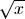.
For positive real numbers, the principal root is simply the
positive square root. For arbitrary complex numbers, the principal
square root is defined to satisfy
, 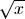.
For positive real numbers, the principal root is simply the
positive square root. For arbitrary complex numbers, the principal
square root is defined to satisfy  .
The function thus has a branch cut along the negative half real axis.
.
The function thus has a branch cut along the negative half real axis.For all mpmath numbers x, calling sqrt(x) is equivalent to performing x**0.5.
Examples
Basic examples and limits:
>>> from mpmath import * >>> mp.dps = 15 >>> print sqrt(10) 3.16227766016838 >>> print sqrt(100) 10.0 >>> print sqrt(-4) (0.0 + 2.0j) >>> print sqrt(1+1j) (1.09868411346781 + 0.455089860562227j) >>> print sqrt(inf) +inf
Square root evaluation is fast at huge precision:
>>> mp.dps = 50000 >>> a = sqrt(3) >>> str(a)[-10:] '9329332814'
sqrt() supports interval arguments:
>>> mp.dps = 15 >>> print sqrt(mpi(16, 100)) [4.0, 10.0] >>> print sqrt(mpi(2)) [1.4142135623730949234, 1.4142135623730951455] >>> print sqrt(mpi(2)) ** 2 [1.9999999999999995559, 2.0000000000000004441]
- mpmath.functions.cbrt(x, **kwargs)¶
cbrt(x) computes the cube root of
, 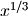. This
function is faster and more accurate than raising to a floating-point
fraction:>>> from mpmath import * >>> mp.dps = 15 >>> 125**(mpf(1)/3) mpf('4.9999999999999991') >>> cbrt(125) mpf('5.0')
Every nonzero complex number has three cube roots. This function returns the cube root defined by 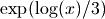 where the principal branch of the natural logarithm is used. Note that this does not give a real cube root for negative real numbers:
>>> print cbrt(-1) (0.5 + 0.866025403784439j)
- mpmath.functions.nthroot(x, n)¶
nthroot(x, n) computes the principal
 -th root of ,
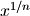. Here must be an integer, and can be negative
(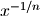 is 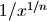).
-th root of ,
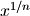. Here must be an integer, and can be negative
(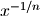 is 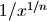).For 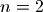 or 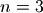, using this function is equivalent to calling sqrt() or cbrt(). In general, nthroot(x, n) is defined to compute 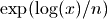.
nthroot() is implemented to use Newton’s method for small
. At high precision, this makes not much more
expensive than the regular exponentiation, 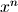. For very large
, nthroot() falls back to use the exponential function.nthroot() is faster and more accurate than raising to a floating-point fraction:
>>> from mpmath import * >>> mp.dps = 15 >>> 16807 ** (mpf(1)/5) mpf('7.0000000000000009') >>> nthroot(16807, 5) mpf('7.0')
Exponentiation (exp(), power())¶
- mpmath.functions.exp(x, **kwargs)¶
Computes the exponential function,
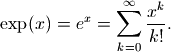
For complex numbers, the exponential function also satisfies
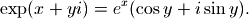
Basic examples
Some values of the exponential function:
>>> from mpmath import * >>> mp.dps = 25 >>> print exp(0) 1.0 >>> print exp(1) 2.718281828459045235360287 >>> print exp(-1) 0.3678794411714423215955238 >>> print exp(inf) +inf >>> print exp(-inf) 0.0
Arguments can be arbitrarily large:
>>> print exp(10000) 8.806818225662921587261496e+4342 >>> print exp(-10000) 1.135483865314736098540939e-4343
Evaluation is supported for interval arguments:
>>> print exp(mpi(-inf,0)) [0.0, 1.0] >>> print exp(mpi(0,1)) [1.0, 2.71828182845904523536028749558]
The exponential function can be evaluated efficiently to arbitrary precision:
>>> mp.dps = 10000 >>> print exp(pi) #doctest: +ELLIPSIS 23.140692632779269005729...8984304016040616
Functional properties
Numerical verification of Euler’s identity for the complex exponential function:
>>> mp.dps = 15 >>> print exp(j*pi)+1 (0.0 + 1.22464679914735e-16j) >>> print chop(exp(j*pi)+1) 0.0
This recovers the coefficients (reciprocal factorials) in the Maclaurin series expansion of exp:
>>> nprint(taylor(exp, 0, 5)) [1.0, 1.0, 0.5, 0.166667, 4.16667e-2, 8.33333e-3]
The exponential function is its own derivative and antiderivative:
>>> print exp(pi) 23.1406926327793 >>> print diff(exp, pi) 23.1406926327793 >>> print quad(exp, [-inf, pi]) 23.1406926327793
The exponential function can be evaluated using various methods, including direct summation of the series, limits, and solving the defining differential equation:
>>> print nsum(lambda k: pi**k/fac(k), [0,inf]) 23.1406926327793 >>> print limit(lambda k: (1+pi/k)**k, inf) 23.1406926327793 >>> print odefun(lambda t, x: x, 0, 1)(pi) 23.1406926327793
- mpmath.functions.power(x, y)¶
Converts
and  to mpmath numbers and evaluates
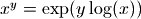:
to mpmath numbers and evaluates
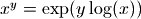:>>> from mpmath import * >>> mp.dps = 30 >>> print power(2, 0.5) 1.41421356237309504880168872421
This shows the leading few digits of a large Mersenne prime (performing the exact calculation 2**43112609-1 and displaying the result in Python would be very slow):
>>> print power(2, 43112609)-1 3.16470269330255923143453723949e+12978188
Logarithms (log(), ln(), log10())¶
- mpmath.functions.log(x, b=None)¶
Computes the base-
 logarithm of , 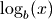. If is
unspecified, log() computes the natural (base 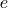) logarithm
and is equivalent to ln(). In general, the base logarithm
is defined in terms of the natural logarithm as
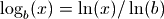.
logarithm of , 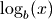. If is
unspecified, log() computes the natural (base 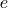) logarithm
and is equivalent to ln(). In general, the base logarithm
is defined in terms of the natural logarithm as
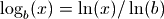.By convention, we take
 .
.The natural logarithm is real if
 and complex if
and complex if  or if
is complex. The principal branch of the complex logarithm is
used, meaning that 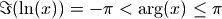.
or if
is complex. The principal branch of the complex logarithm is
used, meaning that 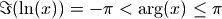.Examples
Some basic values and limits:
>>> from mpmath import * >>> mp.dps = 15 >>> print log(1) 0.0 >>> print log(2) 0.693147180559945 >>> print log(1000,10) 3.0 >>> print log(4, 16) 0.5 >>> print log(j) (0.0 + 1.5707963267949j) >>> print log(-1) (0.0 + 3.14159265358979j) >>> print log(0) -inf >>> print log(inf) +inf
The natural logarithm is the antiderivative of 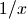:
>>> print quad(lambda x: 1/x, [1, 5]) 1.6094379124341 >>> print log(5) 1.6094379124341 >>> print diff(log, 10) 0.1
The Taylor series expansion of the natural logarithm around
 has coefficients 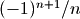:
has coefficients 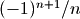:>>> nprint(taylor(log, 1, 7)) [0.0, 1.0, -0.5, 0.333333, -0.25, 0.2, -0.166667, 0.142857]
log() supports arbitrary precision evaluation:
>>> mp.dps = 50 >>> print log(pi) 1.1447298858494001741434273513530587116472948129153 >>> print log(pi, pi**3) 0.33333333333333333333333333333333333333333333333333 >>> mp.dps = 25 >>> print log(3+4j) (1.609437912434100374600759 + 0.9272952180016122324285125j)
- mpmath.functions.ln(x, **kwargs)¶
- Computes the natural logarithm of , 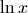.
See log() for additional documentation.
- mpmath.functions.log10(x)¶
- Computes the base-10 logarithm of , 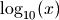. log10(x)
is equivalent to log(x, 10).
Fibonacci numbers (fibonacci()/fib())¶
- mpmath.functions.fibonacci(n, **kwargs)¶
fibonacci(n) computes the
-th Fibonacci number, 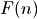. The
Fibonacci numbers are defined by the recurrence 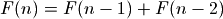
with the initial values 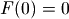, 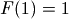. fibonacci()
extends this definition to arbitrary real and complex arguments
using the formula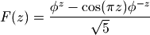
where 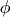 is the golden ratio. fibonacci() also uses this continuous formula to compute for extremely large
, where
calculating the exact integer would be wasteful.For convenience, fib() is available as an alias for fibonacci().
Basic examples
Some small Fibonacci numbers are:
>>> from mpmath import * >>> mp.dps = 15 >>> for i in range(10): ... print fibonacci(i), ... 0.0 1.0 1.0 2.0 3.0 5.0 8.0 13.0 21.0 34.0 >>> print fibonacci(50) 12586269025.0
The recurrence for extends backwards to negative
:>>> for i in range(10): ... print fibonacci(-i), ... 0.0 1.0 -1.0 2.0 -3.0 5.0 -8.0 13.0 -21.0 34.0
Large Fibonacci numbers will be computed approximately unless the precision is set high enough:
>>> print fib(200) 2.8057117299251e+41 >>> mp.dps = 45 >>> print fib(200) 280571172992510140037611932413038677189525.0
fibonacci() can compute approximate Fibonacci numbers of stupendous size:
>>> mp.dps = 15 >>> print fibonacci(10**25) 3.49052338550226e+2089876402499787337692720
Real and complex arguments
The extended Fibonacci function is an analytic function. The property 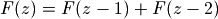 holds for arbitrary
 :
:>>> mp.dps = 15 >>> print fib(pi) 2.1170270579161 >>> print fib(pi-1) + fib(pi-2) 2.1170270579161 >>> print fib(3+4j) (-5248.51130728372 - 14195.962288353j) >>> print fib(2+4j) + fib(1+4j) (-5248.51130728372 - 14195.962288353j)
The Fibonacci function has infinitely many roots on the negative half-real axis. The first root is at 0, the second is close to -0.18, and then there are infinitely many roots that asymptotically approach 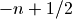:
>>> print findroot(fib, -0.2) -0.183802359692956 >>> print findroot(fib, -2) -1.57077646820395 >>> print findroot(fib, -17) -16.4999999596115 >>> print findroot(fib, -24) -23.5000000000479
Mathematical relationships
For large
, 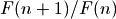 approaches the golden ratio:>>> mp.dps = 50 >>> print fibonacci(101)/fibonacci(100) 1.6180339887498948482045868343656381177203127439638 >>> print phi 1.6180339887498948482045868343656381177203091798058
The sum of reciprocal Fibonacci numbers converges to an irrational number for which no closed form expression is known:
>>> mp.dps = 15 >>> print nsum(lambda n: 1/fib(n), [1, inf]) 3.35988566624318
Amazingly, however, the sum of odd-index reciprocal Fibonacci numbers can be expressed in terms of a Jacobi theta function:
>>> print nsum(lambda n: 1/fib(2*n+1), [0, inf]) 1.82451515740692 >>> print sqrt(5)*jtheta(2,0,(3-sqrt(5))/2)**2/4 1.82451515740692
Some related sums can be done in closed form:
>>> print nsum(lambda k: 1/(1+fib(2*k+1)), [0, inf]) 1.11803398874989 >>> print phi - 0.5 1.11803398874989 >>> f = lambda k:(-1)**(k+1) / sum(fib(n)**2 for n in range(1,k+1)) >>> print nsum(f, [1, inf]) 0.618033988749895 >>> print phi-1 0.618033988749895
References
Lambert W function (lambertw())¶
- mpmath.functions.lambertw(z, k=0)¶
The Lambert W function 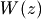 is defined as the inverse function of 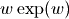. In other words, the value of is such that 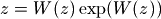 for any complex number
.The Lambert W function is a multivalued function with infinitely many branches. Each branch gives a separate solution of the equation . All branches are supported by lambertw():
- lambertw(z) gives the principal solution (branch 0)
- lambertw(z, k) gives the solution on branch

The Lambert W function has two partially real branches: the principal branch (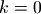) is real for real 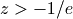, and the
 branch is real for 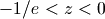. All branches except
have a logarithmic singularity at
branch is real for 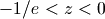. All branches except
have a logarithmic singularity at  .
.Basic examples
The Lambert W function is the inverse of :
>>> from mpmath import * >>> mp.dps = 35 >>> w = lambertw(1) >>> print w 0.56714329040978387299996866221035555 >>> print w*exp(w) 1.0
Any branch gives a valid inverse:
>>> w = lambertw(1, k=3) >>> print w # doctest: +NORMALIZE_WHITESPACE (-2.8535817554090378072068187234910812 + 17.113535539412145912607826671159289j) >>> print w*exp(w) (1.0 + 3.5075477124212226194278700785075126e-36j)
Applications to equation-solving
The Lambert W function may be used to solve various kinds of equations, such as finding the value of the infinite power tower 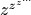:
>>> def tower(z, n): ... if n == 0: ... return z ... return z ** tower(z, n-1) ... >>> tower(0.5, 100) 0.641185744504986 >>> mp.dps = 50 >>> print -lambertw(-log(0.5))/log(0.5) 0.6411857445049859844862004821148236665628209571911
Properties
The Lambert W function grows roughly like the natural logarithm for large arguments:
>>> mp.dps = 15 >>> print lambertw(1000) 5.2496028524016 >>> print log(1000) 6.90775527898214 >>> print lambertw(10**100) 224.843106445119 >>> print log(10**100) 230.258509299405
The principal branch of the Lambert W function has a rational Taylor series expansion around
:>>> nprint(taylor(lambertw, 0, 6), 10) [0.0, 1.0, -1.0, 1.5, -2.666666667, 5.208333333, -10.8]
Some special values and limits are:
>>> mp.dps = 15 >>> print lambertw(0) 0.0 >>> print lambertw(1) 0.567143290409784 >>> print lambertw(e) 1.0 >>> print lambertw(inf) +inf >>> print lambertw(0, k=-1) -inf >>> print lambertw(0, k=3) -inf >>> print lambertw(inf, k=3) (+inf + 18.8495559215388j)
The and
branches join at 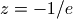 where
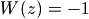 for both branches. Since 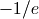 can only be represented
approximately with mpmath numbers, evaluating the Lambert W function
at this point only gives 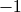 approximately:>>> mp.dps = 25 >>> print lambertw(-1/e, 0) -0.999999999999837133022867 >>> print lambertw(-1/e, -1) -1.00000000000016286697718
If happens to round in the negative direction, there might be a small imaginary part:
>>> mp.dps = 15 >>> print lambertw(-1/e) (-1.0 + 8.22007971511612e-9j)
Possible issues
The evaluation can become inaccurate very close to the branch point at . In some corner cases, lambertw() might currently fail to converge, or can end up on the wrong branch.
Algorithm
Halley’s iteration is used to invert , using a first-order asymptotic approximation (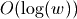 or 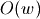) as the initial estimate.
The definition, implementation and choice of branches is based on Corless et al, “On the Lambert W function”, Adv. Comp. Math. 5 (1996) 329-359, available online here: http://www.apmaths.uwo.ca/~djeffrey/Offprints/W-adv-cm.pdf
TODO: use a series expansion when extremely close to the branch point at and make sure that the proper branch is chosen there
Arithmetic-geometric mean (agm())¶
- mpmath.functions.agm(a, b=1)¶
agm(a, b) computes the arithmetic-geometric mean of
 and
, defined as the limit of the following iteration:
and
, defined as the limit of the following iteration: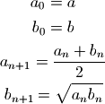
This function can be called with a single argument, computing 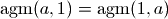.
Examples
It is a well-known theorem that the geometric mean of two distinct positive numbers is less than the arithmetic mean. It follows that the arithmetic-geometric mean lies between the two means:
>>> from mpmath import * >>> mp.dps = 15 >>> a = mpf(3) >>> b = mpf(4) >>> print sqrt(a*b) 3.46410161513775 >>> print agm(a,b) 3.48202767635957 >>> print (a+b)/2 3.5
The arithmetic-geometric mean is scale-invariant:
>>> print agm(10*e, 10*pi) 29.261085515723 >>> print 10*agm(e, pi) 29.261085515723
As an order-of-magnitude estimate, 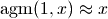 for large
:>>> print agm(10**10) 643448704.760133 >>> print agm(10**50) 1.34814309345871e+48
For tiny
, 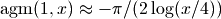:>>> print agm('0.01') 0.262166887202249 >>> print -pi/2/log('0.0025') 0.262172347753122
The arithmetic-geometric mean can also be computed for complex numbers:
>>> print agm(3, 2+j) (2.51055133276184 + 0.547394054060638j)
The AGM iteration converges very quickly (each step doubles the number of correct digits), so agm() supports efficient high-precision evaluation:
>>> mp.dps = 10000 >>> a = agm(1,2) >>> str(a)[-10:] '1679581912'
Mathematical relations
The arithmetic-geometric mean may be used to evaluate the following two parametric definite integrals:
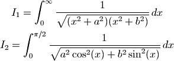
We have:
>>> mp.dps = 15 >>> a = 3 >>> b = 4 >>> f1 = lambda x: ((x**2+a**2)*(x**2+b**2))**-0.5 >>> f2 = lambda x: ((a*cos(x))**2 + (b*sin(x))**2)**-0.5 >>> print quad(f1, [0, inf]) 0.451115405388492 >>> print quad(f2, [0, pi/2]) 0.451115405388492 >>> print pi/(2*agm(a,b)) 0.451115405388492
A formula for 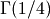:
>>> print gamma(0.25) 3.62560990822191 >>> print sqrt(2*sqrt(2*pi**3)/agm(1,sqrt(2))) 3.62560990822191
Possible issues
The branch cut chosen for complex
and is somewhat
arbitrary.